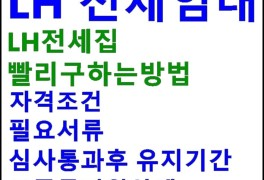

주제별 캐스트

-
레시피
전 세계에서 만날 수 있는 특이한 과일들
특이한 과일 10 우리는 흔히 과일을 고정된 맛과 형태, 색깔을 가지고 있는 무언가로 생각하는 경향이 있다. 그래서 붉은색을 이야기할 때는 사과나 딸기에 빗대고, 초록색을 이야기할 때는 수박을 들기도 한다. 하지만 세계 곳곳에는 종이 같더라도 기후에 따라 다른 형태와 맛을 가지게 된 과일들이 많다. 우리는 생각조차 해본 적이 없는 특이한 형태와 맛을 가진
3일 전 데일리 -
레시피
요즘 대세! 서울 스페셜티 커피 전문점 4
좋은 원두가 주는 다채로운 풍미의 향연, 일반 커피와 얼마나 다른지 궁금하다면? % ARABICA 인스타그램 @my_ellaskye'퍼센트 아라비카' 일명 '응 커피'가 드디어 국내에 상륙했다. 이곳은 교토에 가면 꼭 들리는 카페로 유명하다. 시그니처 커피 역시 교토 라테로, 라테에 연유가 소량 들어간 메뉴다. 원두는 블
1주일 전 에스콰이어 코리아 -
레시피
버섯들깨탕 표고 넣은 간단 보양식 종류 들깨버섯탕 들깨가루 요리
아주 오래전에 지인 집에서 처음 보고 먹어본 표고 버섯들깨탕이에요. 그때 처음 봤을 때는 떡국떡으로 만든 크림 떡볶이 같기도 했고 떡국 같기도 했고요. 들깨탕인지 모르고 먹었는데 너무 맛있어서 아마도 그때부터 좋아하게 되었던 것 같아요. 그때도 새송이버섯으로 만든 거였는데 매끈하니 부드럽고 고소한 게 잊히지가 않네요. 오늘은 간단 보양식 종류로 만드는 법을
2개월 전 졸리 -
레시피
소갈비탕 끓이는 법 든든한 집밥 가을보양식 갈비탕 끓이기 소갈비 요리
소갈비탕 끓이는 법 든든한 집밥 가을보양식 갈비탕 끓이기 소갈비 요리 안녕하세요 해나리입니다 쌀쌀한 기운이 감도는 가을 날 아침이나 저녁에는 국물요리가 생각나곤 해요 예전에는 국이나 탕 종류 없어도 밥을 잘 먹었는데 나이를 먹으면 입안이 까끌까끌 거린다는 어르신들 말씀에 공감하는 나이가 되어 버렸네요 국이나 찌개가 없이도 집밥은 무조건 맛있다며 밥 한 그릇
2주일 전 해나리
-

레시피
배숙 만들기 달달한 배꿀찜으로 환절기 감기예방
배숙 만들기 달달한 배꿀찜으로 감기예방! by_선물같은하루 아침저녁으로 기온차가 큰 환절기일수록 면역력을 잘 챙겨야 해요. 이 맘때쯤이면 기관지가 예민한 신랑을 위해 배숙 만들기를 하는데요. 몸이 으슬으슬하니 감기 기운이 살짝 느껴지기 시작한다거나 컨디션이 안 좋을 때 만들어 먹으면 몸도 따뜻해지고 참 좋더라고요. 저도 요 근래 늦은 새벽까지 뜬 눈으로 지
3주일 전 선물같은하루 -
레시피
가을보양식 매콤 낙지볶음 만들기 땅콩버터 낙지볶음
여름에서 가을로 가는 환절기가 되니 좀 지치는 분들이 계실텐데요. 가을이 제철인 보양식이 뭔가 찾아봤더니 낙지가 있네요. 낙지는 사계절 모두 먹을 수 있는 식재료지만 봄에 산란을 하고 여름이 지난 가을에 영양을 가장 많이 품고 있대요. 그래서 '봄 주꾸미 가을 낙지' 라고 하나봐요. 맛집에서 한끼 사먹어도 되지만 저는 요리 블로거라 ㅎㅎㅎ 낙지를 넉넉히 .
3주일 전 연두 -
레시피
닭백숙 끓이는법 환절기 보양식 닭한마리 레시피
닭백숙 끓이는법 환절기 보양식 닭한마리 레시피 환절기만 되면 컨디션이 다운되는 알콩.. 만사 귀찮고 기운도 떨어지고.. 몸보신해야겠다며 닭 한 마리 사다 진하고 맛있게 백숙을 끓여보았답니다 깔끔하게 특유의 비린내 없이 끓이기 위해선 우선 손질이 중요하고요 쌀뜨물에 양파, 대파, 마늘, 생강, 통후추 엄나무랑 황기 등 향신 재료 더해 푹 끓여 내면 잡내 없이
1개월 전 알콩 -
레시피
환절기 보양식 해신탕 만들기 삼계탕 업그레이드 버전 해신탕 누룽지 해신탕
무더운 여름 보양식으로도 좋고, 쌀쌀해지기 시작하는 환절기 보양식으로도 좋은 해신탕을 만들었어요. 닭에 전복, 새우, 낙지를 넣어 끓인 해신탕 삼계탕 업그레이드 버전입니다~😁 눈으로 먼저 먹고 입으로 먹는 세상 화려하고 예쁜 보양음식이 완성되었어요. 전통 보양 음식인줄 알았던 해신탕은 드라마 해신이 방영되었을 때 김성완 호텔 조리장이 개발한 메뉴라서 해신
2주일 전 엄마봉다리